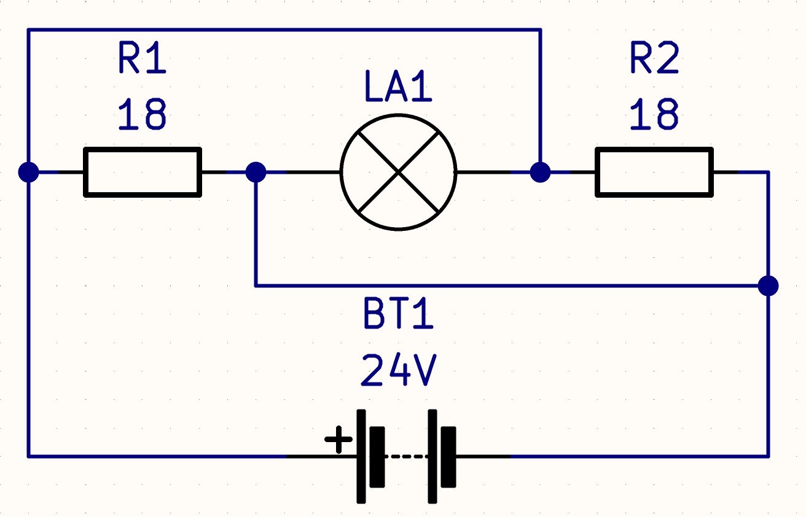

На главную
Задача №2
Дано:
- E = 24 V
- R1,R2 = 18 Ом
- Rлам = 9 Ом
- Iобщ = 0.875 А

Найти:
r - ?
Решение:
Схема преобразуется в паралелльное соединение трех цепей. Таким образом:
1/Rобщ = 1/R1 + 1/R2 + 1/Rлам = 0.222222222 См,
или Rобщ = 1 / 0.222222222 = 4.5 Ом
Uпад.внеш = Iобщ * Rобщ = 0.875 * 4,5 = 3.9375 В,
Uпад.внутр. = E - Uпад.внеш = 24 / 3.9375 = 20.0625 В
r = Uпад.внутр / Iобщ = 20.0625 / 0.875 =
22.928571429 Ом
Ответ:
-
Внутреннее сопротивление источника питания равно
22.928571429 Ом.